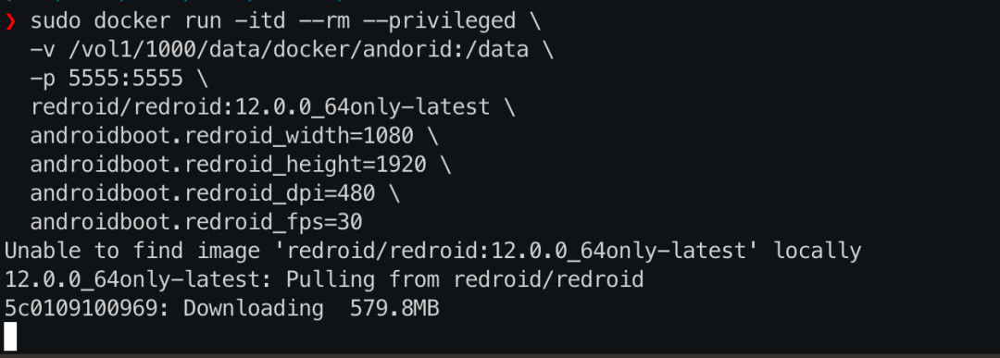
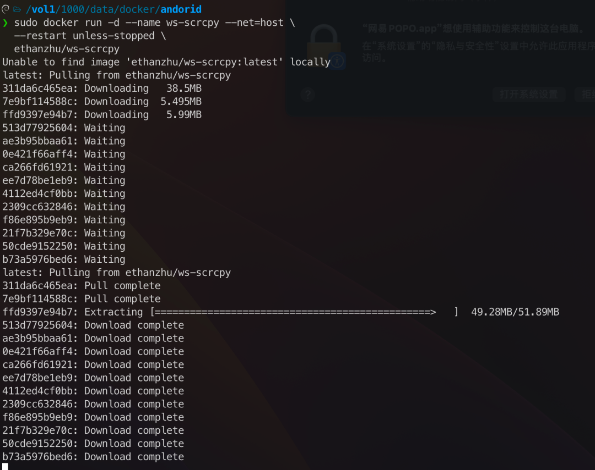
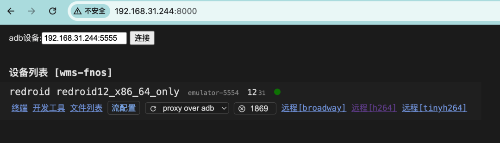
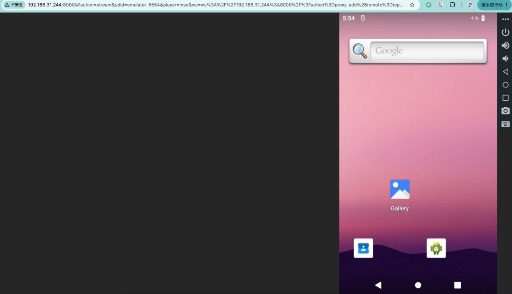
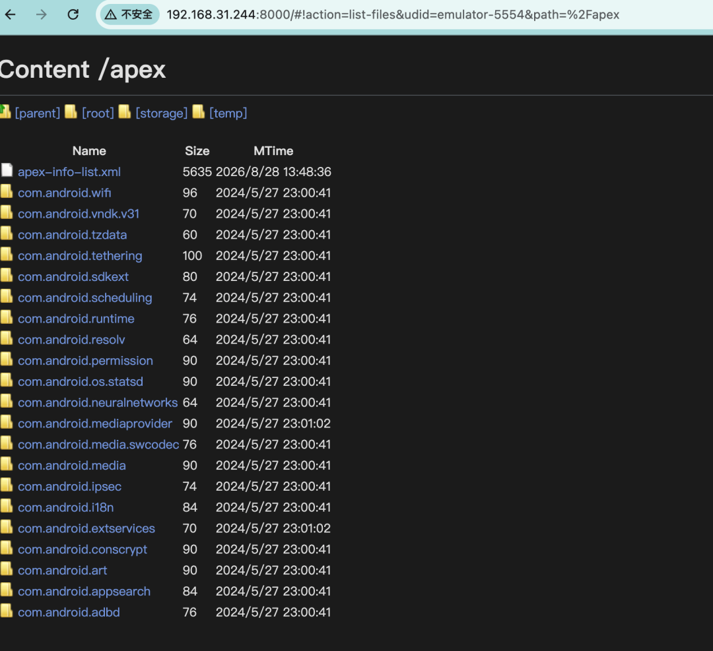
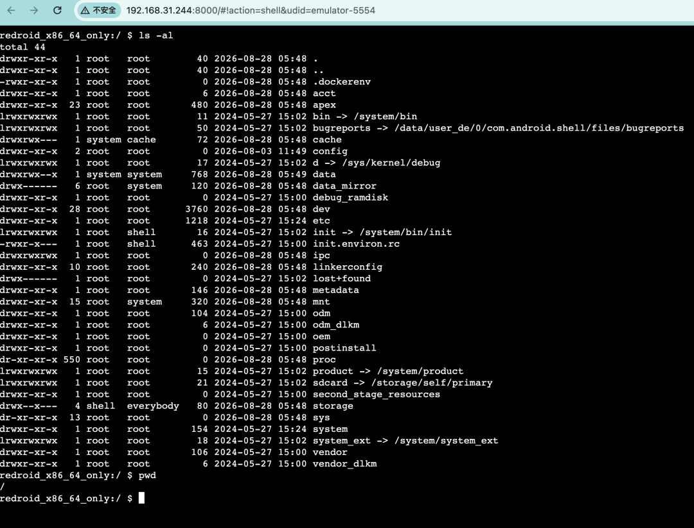

我的手机里有个 App，每天晚上都要签到领积分。以前都是睡前点一下，有时候忘了就断签，第二天看着提醒心里那个难受。后来想搞个自动化脚本挂着，但手机跑脚本耗电又发热，总不能为这个专门买台手机吧？
转念一想——NAS 不是 24 小时开机的吗？能不能让 NAS 帮我跑 Android App？
一开始以为要在 NAS 上装 Android 模拟器，试了一圈发现，传统的模拟器太重了，而且需要图形界面，NAS 上根本跑不起来。后来找到了一个叫 Redroid（Remote Android）的开源项目，它能直接在 Docker 里运行完整的 Android 系统，不需要硬件虚拟化。NAS 上一条 docker run 命令，一个 Android 系统就起来了。
Redroid（GitHub 6.7K stars，Apache 2.0 协议）是一个把 Android 系统容器化的开源项目。它的原理很简单：把 Android 的用户空间直接跑在宿主 Linux 内核上，通过 binder 和 ashmem 内核模块实现 Android 特有的进程间通信和内存管理。
最关键的——它不需要 KVM 硬件虚拟化。传统的 Android 模拟器（比如 MuMu 模拟器、雷电模拟器、夜神模拟器，或者 Android Studio 自带那个）都需要 CPU 支持硬件虚拟化，云服务器（已虚拟化一层)恰恰没有这个条件。这也是为什么那些模拟器只能在电脑上跑，而 Redroid 可以跑在 NAS、云服务器上，不需要显卡、不需要显示器，一条命令后台就能跑起来。
支持的 Android 版本从 8.1 到最新的 Android 16 都可以选，arm64 和 amd64 两种架构都支持。镜像压缩后 600MB 上下（不同版本略有差异），解压开是一个完整 Android 系统，比很多人手机里装的 App 加起来还大。
最直接的用途。自动化签到、定时任务、后台运行脚本——这些以前需要手机一直开着的活儿，现在全交给 NAS 里的 Android 容器。NAS 本身 24 小时开机，多跑一个 Android 容器跟多跑一个普通 Docker 容器差不多，电费几乎零增加。手机该充电充电，该睡觉睡觉，挂机的事交给 NAS。
有些工具只有 Android 版，没有网页版，也没有 iOS 版。以前只能在手机上用，手机一离手就用不了。现在 NAS 上跑个 Android 容器，App 装进去，用浏览器远程操作，App 更新了容器里照常更新，跟真机一样。
跑 UI 自动化测试、批量截图、App 兼容性测试——以前用真机跑，屏幕一直亮着，电池循环刷刷掉。容器里跑测试，挂了直接重启镜像，数据在挂载卷里完好无损，比折腾真机省心一百倍。
这种用法其实在企业里早就这么干了——云游戏、App 测试农场、手机虚拟化，背后跑的正是 Redroid 这套方案。只不过企业用 Kubernetes 集群管理成百上千个实例，NAS 上跑一个容器玩玩，原理是一样的。
Redroid 的部署核心就两步：拉镜像、启动容器。内核特性大部分现代系统已经内置，按需排查就行。
Redroid 运行需要两个内核特性：binder（Android 进程间通信）和 ashmem/memfd（共享内存）。
好消息是——大部分现代 Linux 发行版已经把这两个特性内置进内核了，飞牛 OS 的 6.18 内核、Ubuntu 22.04+、Debian 12 都是如此，直接启动容器就能跑，不需要手动加载任何模块。
可以先不管内核，直接跳到第二步启动容器。如果容器启动后马上退出（秒退），再回来查这步。
怎么判断是不是内核特性的问题：
# 看容器退出日志
docker logs <容器名>
# 看内核日志里有没有binder/ashmem相关报错
dmesg -T | grep -iE "binder|ashmem"如果日志提示找不到 /dev/binder 之类，说明当前内核没开这两个特性，需要处理：
# Ubuntu/Debian：binder编译成了模块，需要手动加载
sudo apt install linux-modules-extra-$(uname -r)
sudo modprobe binder_linux devices="binder,hwbinder,vndbinder"
# ashmem在新内核(5.18+)已移除，redroid改用memfd，这条只在老内核上需要
sudo modprobe ashmem_linux想让模块开机自动加载，把 modprobe 命令加到开机脚本里，或者在/etc/modules 里添加 binder_linux。
如果你的 NAS 是飞牛 OS：6.18 内核已内置 binderfs 和 memfd，不用加载任何模块，直接启动容器就行。
docker run -itd --rm --privileged \
--pull always \
-v /opt/android-data:/data \
-p 5555:5555 \
redroid/redroid:12.0.0_64only-latest
参数解释：
--privileged-v /opt/android-data:/data-p 5555:5555redroid/redroid:12.0.0_64only-latest⚠️ 安全提醒：5555 端口不要映射到公网，只在内网使用。
启动容器时可以指定分辨率，让投屏画面更清晰：
docker run -itd --rm --privileged \
-v /opt/android-data:/data \
-p 5555:5555 \
redroid/redroid:12.0.0_64only-latest \
androidboot.redroid_width=1080 \
androidboot.redroid_height=1920 \
androidboot.redroid_dpi=480 \
androidboot.redroid_fps=30容器里的 Android 没有屏幕，怎么操作？
scrcpy 是一个开源投屏工具（GitHub 116K stars），在电脑上装好后，一条命令就能把 Android 容器的画面投到电脑上，支持鼠标操作和键盘输入，跟在手机上操作没什么区别。
# 电脑上装scrcpy后，连到NAS上的Android容器
scrcpy -s 你的NAS内网IP:5555连上之后，电脑上会弹出一个窗口，显示 Android 的桌面，点按、滑动、输入文字，跟操作真机一样。
想在浏览器里直接操作 Android 容器，可以用 ws-scrcpy 这个项目。它把 scrcpy 的投屏、文件管理、App 安装全部搬到浏览器里，不需要在电脑上装任何软件，打开浏览器就能看到 Android 桌面并操作。
ws-scrcpy 的原项目（NetrisTV/ws-scrcpy）已经停更多年，Docker Hub 上也没有官方镜像。目前维护活跃、能直接拉镜像的 fork 是 ethanzhu/ws-scrcpy（439MB，支持 amd64），国内还有阿里云镜像加速。
用 Docker 部署 ws-scrcpy：
docker run -d --name ws-scrcpy --net=host \
--restart unless-stopped \
ethanzhu/ws-scrcpy
用 --net=host 是因为 ws-scrcpy 需要通过 ADB 连接宿主机上的 Redroid 容器（5555 端口），host 网络模式能自动发现宿主机设备，省去额外配置。启动后在浏览器里打开 http://你的 NAS 内网 IP:8000，就能看到 Web 界面。

如果 --net=host 不方便用（比如端口冲突），也可以用端口映射的方式，但需要手动让 ws-scrcpy 容器去连 Redroid：
docker run -d --name ws-scrcpy \
-p 8000:8000 \
--restart unless-stopped \
ethanzhu/ws-scrcpy
# 让 ws-scrcpy 容器连接宿主机上的 Redroid
docker exec ws-scrcpy adb connect 你的NAS内网IP:5555连上之后，Android 桌面就出现在浏览器里了。点按、滑动、装 App、传文件，全部在浏览器里完成。

装 App 的方法：在 Web 界面的文件管理功能里上传 APK 文件，点击安装，跟手机上装 App 一样简单。

ws-scrcpy 还内置了 ADB Shell 终端，不用另开命令行，直接在浏览器里就能敲 adb 命令调试容器。

Redroid 容器跑起来之后，最核心的问题就是：怎么让 App 自动签到、自动完成任务？
方法一：App 自带的定时任务
很多 App 本身就支持定时签到或自动领取。先把 App 装好、登录账号，在 App 的设置里找到「定时签到」「每日奖励」之类的选项打开就行。这是最省心的方式，不需要额外折腾。
方法二：在 Android 容器里装 Tasker 自动化
Tasker 是一款 Android 端的自动化工具，直接在容器里安装，然后配置定时触发任务。可以设置每天固定时间打开某个 App、点击指定位置、等待几秒、再返回。配置好了之后，即使电脑关了，Android 容器里的 Tasker 也会按计划执行。
方法三：Auto.js 脚本（适合复杂操作）
Auto.js 是一个 Android 端的 JavaScript 自动化工具，可以写脚本实现更复杂的自动操作——识别屏幕上的文字、判断界面状态、条件分支等。在 Android 容器里装 Auto.js，写一个签到脚本，设置定时执行。
我推荐的做法：先看 App 本身有没有定时签到功能，有的话直接开。没有的话，在容器里装 Tasker 配置定时任务，最稳定也最省心。
NAS 跑 Android 容器，配置要求其实不高，大部分主流 NAS 都能满足：
我的 NAS 是飞牛 OS，内核 6.18，直接加载 binder 模块就能用，没有遇到兼容性问题。Linux 内核的 NAS 系统理论上都可以——群晖 DSM、威联通 QTS、Unraid 等系统只要内核打开了 binder 相关选项，都能跑。
问题 1：容器启动后马上就退出了
大概率是内核模块没加载。运行dmesg -T | tail -30看日志，如果提示 binder、ashmem 相关错误，确认 modprobe 命令没报错，重启后再试。
问题 2：Web 界面连不上容器
ws-scrcpy 需要通过 ADB 连接 Redroid 容器的 5555 端口。用 --net=host 启动的话会自动发现宿主机设备；如果用端口映射（-p 8000:8000），需要手动执行 docker exec ws-scrcpy adb connect 你的 NAS 内网 IP:5555 让容器去连 Redroid。
问题 3：App 市场怎么装？
Redroid 默认不带 Google Play 服务。装国内 App 的话，去酷安官网下载 APK 文件，通过 ws-scrcpy 的 Web 界面上传安装就行。如果需要 Google Play，可以编译带 GMS 的镜像，官方文档里有步骤。
问题 4：装完 App 后怎么保存数据？
启动容器时挂载了-v /opt/android-data:/data，App 数据就保存在 NAS 的/opt/android-data目录里。容器删了重建，数据还在。没挂载的话，容器删了数据就没了。
问题 5：GPU 加速要开吗？
Redroid 默认用软件渲染（gpu_mode=guest），日常用 App、刷界面完全够用。如果 NAS 有独立显卡或集成显卡，可以设置androidboot.redroid_gpu_mode=host开启 GPU 加速，游戏和图形渲染会更流畅。
虽然 Redroid 很好用，但也不是万能的：
前面挂机讲得比较多，其实 Redroid 不止能跑签到脚本。启动时把分辨率和 DPI 改成平板规格，它就是一台平板——没有单独的平板镜像，改的就是这几个参数：
docker run -itd --rm --privileged \
-v /opt/android-data:/data \
-p 5555:5555 \
redroid/redroid:12.0.0_64only-latest \
androidboot.redroid_width=1920 \
androidboot.redroid_height=1200 \
androidboot.redroid_dpi=240 \
androidboot.redroid_fps=30横屏 1920×1200、DPI 降到 240，投屏出来就是平板界面，画布大了一截，操作微信这类 App 比手机竖屏顺手得多。
在 NAS 上跑 Android 容器这件事，折腾之前觉得是「没必要」，折腾完觉得「真香」。NAS 本来就是 24 小时开机的，放个 Android 容器在里面，相当于是把手机该干的活搬到 NAS 上了——自动化脚本、挂机任务、App 操作，全都交给 NAS，手机解放出来。
而且 Docker 容器的好处大家都知道：挂了就重启，系统坏了重新拉一个镜像，数据在挂载的卷里完好无损。比折腾真机省心多了。
大家 NAS 上都在跑什么有意思的容器？有没有试过其他 Android 容器方案？欢迎在评论区聊聊。
觉得有用的话点个关注，后续还会继续分享 NAS 的各种实用玩法。